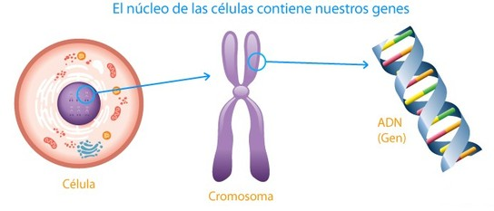

Avances de la biología
El avance de la tecnología permite al hombre de ciencia, el descubrimiento y la manipulación de sus conocimientos para lograr perfeccionar su ciencia.

En el ámbito de la biología y la medicina, por ejemplo, la identificación de genes específicos que incrementan el riesgo de trastornos mentales hereditarios entre ellos la esquizofrenia, la depresión y el trastorno bipolar, es hoy uno de los temas de investigaciones que ayudarían a desarrollar nuevos fármacos para estas enfermedades.
Otro avance destacado se refiere al sorprendente descubrimiento de que las células madre embrionarias de ratón pueden desarrollarse como espermatozoides y como óvulos, lo que permitirá conocer mejor algunas formas de esterilidad.
Un artículo de la revista Science incluye en esta ocasión, una sección especial dedicada al síndrome respiratorio agudo severo (SRAS), donde se comenta que la epidemia ha servido para recordarnos que en cualquier momento pueden emerger nuevas enfermedades infecciosas, como esta que acabó con la vida de 916 personas en todo el mundo. La identificación de genes medidores del tiempo en moscas de la fruta, ratón y bacterias podrían explicar por qué distintos organismos, entre ellos los seres humanos, están alertas durante el día y duermen durante la noche.